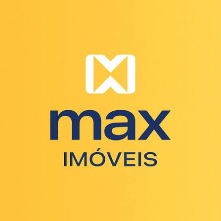
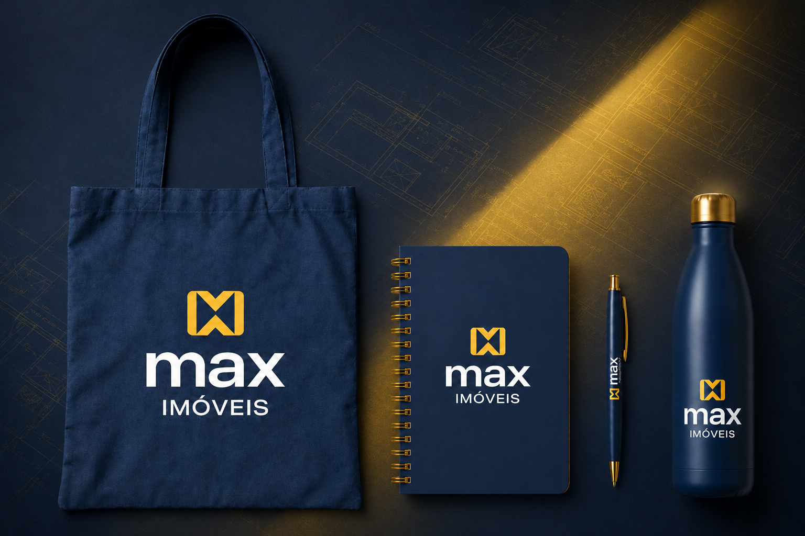

Antes da chegada
Preparar sala, kit, acessos, equipamentos, agenda e responsáveis pela recepção.

Uma jornada para acolher, conectar e desenvolver pessoas, fortalecendo a experiência de quem constrói a história da Max Imóveis todos os dias.
Onboarding não é apenas apresentar regras no primeiro dia. É reduzir insegurança, acelerar autonomia e criar uma referência clara de cultura, comportamento e desempenho desde o início.
Preparar sala, kit, acessos, equipamentos, agenda e responsáveis pela recepção.
Acolher, contar a história, apresentar cultura, estrutura, normas e pessoas-chave.
Acompanhar adaptação, dúvidas, treinamentos, rotina e integração com a liderança.
Realizar checkpoints, avaliar experiência e consolidar expectativas e desenvolvimento.
A apresentação final poderá receber textos, fotos, nomes, documentos e links após a validação interna. Aqui estão os tópicos e a finalidade de cada bloco.
Cria segurança psicológica, apresenta a agenda do dia e mostra quem acompanhará a pessoa. Começa antes da admissão, com comunicação, estrutura e acessos preparados.
Conecta a pessoa ao legado, aos fundadores, aos marcos da trajetória e à razão de existir da Max. Fotos e depoimentos tornam a história mais humana.
Traduz a estratégia em comportamentos esperados. Sugestão: revisar formalmente uma vez ao ano e sempre que houver mudança relevante de estratégia, posicionamento ou estrutura — não significa necessariamente alterar todos os anos.
Reforça credibilidade e padrão de qualidade. Apresentar somente certificações e reconhecimentos validados; o GPTW deve aparecer como objetivo futuro, com ações e critérios claros.
Apresenta a Matriz Itajaí e as filiais de Navegantes e Balneário Camboriú, explicando como as unidades, áreas e serviços se conectam para atender clientes.
Reduz ruídos, deixa clara a liderança direta, os canais de decisão e as interfaces de cada função. Deve ser visual e atualizado a cada movimentação estrutural.
Alinha convivência, postura profissional, cuidado com espaços compartilhados, atendimento, comunicação e responsabilidades individuais.
Explica datas, composição da remuneração, acesso ao holerite/comprovante, descontos, canais de suporte e regras dos benefícios, reduzindo dúvidas recorrentes.
Orienta entrega, responsabilidade, conservação, senhas, uso profissional, devolução, suporte e segurança. As normas de uso devem ser formalizadas em termo próprio.
Explica ativação, utilização, saldo e suporte do cartão; também padroniza entrega, conservação, apresentação e reposição dos uniformes.
Mostra, com exemplos, as marcações de entrada, saída, intervalos e correções. O registro correto protege colaborador e empresa e garante fechamento confiável.
Orienta tratamento responsável de dados de clientes e colaboradores, compartilhamento, armazenamento, acesso, descarte e comunicação de incidentes. Deve ser acompanhado de políticas e termos formais.
Reserva um espaço seguro para perguntas e encerra com pesquisa rápida por QR Code. O retorno permite medir clareza, acolhimento, estrutura e pontos de melhoria.

Ecobag • agenda • caneta • garrafinha
A integração começa no ambiente. Uma sala preparada e um kit útil materializam cuidado, organização e pertencimento.
Um momento de conexão para quem já faz parte da história. O encontro aproxima pessoas, compartilha a trajetória da empresa, apresenta melhorias e reforça duas ideias: você é um máximo e você pertence à Max.
As ações internas deixam de ser iniciativas soltas e passam a ter objetivo, público, responsável, orçamento e indicador. O calendário deve equilibrar saúde, reconhecimento, informação e conexão entre as três unidades.
Setembro Amarelo, Outubro Rosa, Novembro Azul, segurança, bem-estar e outras pautas relevantes — sempre com conteúdo responsável, canal de apoio e cuidado para não expor colaboradores.
Régua mensal de aniversariantes e marcos de 1, 3, 5 anos ou faixas definidas, com comunicação padronizada e reconhecimento coerente com a cultura.
Planejamento trimestral e anual com campanhas, eventos, comunicados, ações de integração, orçamento, responsáveis, prazos e avaliação de resultado.
Ações de boas-vindas, celebrações institucionais, 29 anos da Max, encontros das unidades e momentos que aproximem equipes e liderança.
Definir tom de voz, frequência e canais para que mensagens importantes não concorram entre si e cheguem a todos com clareza.
Participação, alcance, percepção, comentários, adesão, custo por ação e aprendizados para o próximo ciclo.
Portal interativo para iluminar uma casa, plantar um girassol e deixar uma mensagem no mural. Uma ação de conscientização, acolhimento e participação.
Acessar campanha Setembro AmareloAutomação e controle não são projetos isolados: reduzem retrabalho, aumentam confiabilidade e dão ao RH dados para decidir.
Automatizar as batidas, conferência, notificações, assinatura, ajustes, acompanhamento de pendências e visão dos gestores.
Padronizar entrada mensal, aprovações, cálculo, histórico e dashboard para reduzir divergências.
Centralizar benefícios, uniformes, solicitações, acessos, documentos e indicadores em fluxos rastreáveis.
O desenvolvimento conecta estratégia, competências, liderança, saúde ocupacional e acompanhamento — com ações recorrentes e mensuráveis, não apenas treinamentos pontuais.
Competências, clima, riscos psicossociais, necessidades por área e prioridades do negócio.
Ciclo de desempenho com critérios, feedback, evidências e calibragem de liderança.
Objetivos individuais, ações, prazos, responsáveis, evidências e checkpoints.
Formação por função e nível, com conteúdo técnico, comportamental e de qualidade de vida.
Papel da liderança, comunicação, feedback, gestão de conflitos, indicadores, reconhecimento, segurança psicológica e condução de equipes.
Autoconsciência, autorregulação, empatia, relacionamentos, tomada de decisão e aplicação no trabalho.
Integrar fatores psicossociais ao gerenciamento de riscos ocupacionais: diagnóstico, plano de ação, responsabilidades, registros, comunicação e acompanhamento com apoio técnico de SST.
Onboarding, cultura, atendimento, vendas, sistemas, LGPD, ética, segurança, técnica por cargo e reciclagens periódicas.
Profissional da área para abordar orçamento, dívidas, crédito responsável, e-consignado, reserva de emergência e planejamento — sem exposição ou julgamento individual.
Medir reação, aprendizagem, aplicação prática e resultado, registrando presença, evidências e próximos passos.
Consolidação agregada dos relatórios de janeiro e março a agosto de 2026. Fevereiro não foi enviado; por isso, não foi tratado como zero.
Base usada: 82 colaboradores informados na proposta Sólides. Este é o índice acumulado estimado dos relatórios recebidos. Para o turnover oficial mensal, é necessário usar o headcount médio de cada competência: (admissões + desligamentos) ÷ 2 ÷ quadro médio × 100.
Julho e agosto representam 12 das 24 saídas e 60% do desembolso observado. Exigem investigação de causas, áreas e lideranças.
7 pessoas saíram antes de 90 dias. A jornada de recrutamento, onboarding e checkpoints é a frente mais diretamente relacionada.
18 colaboradores, R$ 15.241,75 em parcelas no mês e média de R$ 846,76. Utilizar apenas de forma agregada e educativa.
Os cenários abaixo usam somente R$ 47.715,48 de desembolso associado a pedidos e términos antecipados iniciados pelo empregado. Não incluem produtividade perdida, recrutamento, vacância ou tempo da liderança.
Os 7 desligamentos até 90 dias somaram R$ 11.524,37 de desembolso observado. Reduzir esse grupo em 15%, 25% ou 35% representaria aproximadamente R$ 1.728,66, R$ 2.881,09 ou R$ 4.033,53, além dos custos indiretos ainda não medidos.
Regime tributário: por se tratar de Lucro Presumido, o ROI é apresentado prioritariamente por caixa e eficiência operacional. Eventuais efeitos fiscais devem ser validados pela contabilidade; despesas não foram tratadas aqui como redução automática da base presumida de IRPJ/CSLL.
A decisão pode combinar uma plataforma consolidada de mercado com a evolução do portal próprio da Max. O critério deve considerar aderência, implantação, integrações, custo total, segurança, suporte e resultado.
A proposta contempla o Profiler Gestão Professional para 82 colaboradores, recrutamento e seleção e acompanhamento da jornada.
Proposta válida até 24/09/2026. Valores e escopo devem ser confirmados com o fornecedor antes da contratação.
Escaneie o QR Code ou abra o link para realizar a análise comportamental. Há duas cortesias compartilhadas.
Fazer análise comportamentalPortal interno com identidade da Max, IA Maxiane, solicitações de RH, colaboradores, comissões, benefícios, cargos e salários, pesquisas, desempenho, People Analytics e auditoria.
Conhecer o MAX PEOPLESólides oferece solução pronta, metodologia comportamental e suporte. MAX PEOPLE permite maior personalização e centralização interna. Recomenda-se piloto, matriz de requisitos e comparação de custo total em 12 meses.
A proposta comercial apresenta uma condição promocional de 50% nas quatro primeiras mensalidades: R$ 951,19 por mês. A partir da 5ª mensalidade, o valor passa a R$ 1.902,39 por mês. A implantação é uma taxa única de R$ 951,19, também com 50% de desconto. A proposta considera 82 colaboradores e prevê margem até 90 colaboradores sem aumento da mensalidade.
Como um bom empreendimento, a experiência das pessoas começa pela fundação, ganha estrutura e evolui continuamente. Sem ruptura: uma construção feita com quem já faz parte da Max.
Validar cultura, conteúdos, organograma, riscos, dados disponíveis e prioridades.
Onboarding, kit, Encontro Você é MAX!, campanhas, termos, ponto e comissão.
Avaliação, liderança, PDI, NR-1, inteligência emocional e trilhas educacionais.
Turnover, custos, experiência, treinamento, engajamento e melhoria contínua.
A aprendizagem ganha uma linguagem própria da Max: cada colaborador constrói sua trajetória, abre portas e conquista novas chaves.
A UNIMAX conecta LNT, competências, função, avaliação de desempenho e PDI. Cada pessoa terá uma jornada coerente com sua função, equipe, gaps e próximos passos de carreira.
Monte cenários e veja como cada combinação influencia Cultura, Desenvolvimento, Experiência, Eficiência, Dados e Prevenção.
Escolha o objetivo principal. A mesma combinação pode ser excelente para um objetivo e insuficiente para outro.
Simulação estratégica qualitativa: os índices representam a aderência relativa das iniciativas às dimensões de RH e servem para comparação de cenários, não como indicadores de resultado realizado.
Porque pertencer é entender a história, reconhecer seu papel e enxergar espaço para crescer.